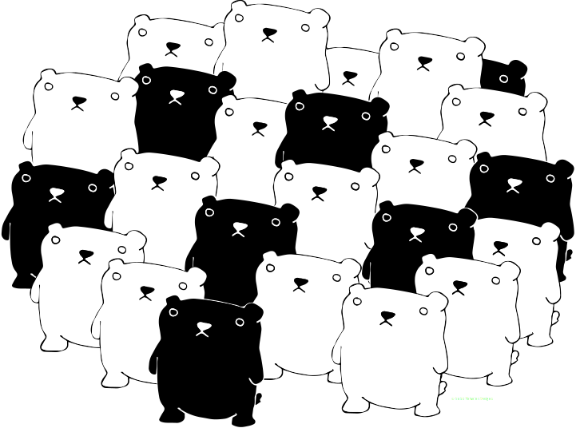

Miscellaneous works
Here is a small selection of work from my pursuits outside of front-end. I have included some pieces from my career as a glassblower, a bit of digital art, and a music video from my band, Terminalist.

Here is a small selection of work from my pursuits outside of front-end. I have included some pieces from my career as a glassblower, a bit of digital art, and a music video from my band, Terminalist.
My career as a glassblower started about ten years ago, and in that time I have worked in different roles and in many different studios, both in Denmark and the USA. From assistanceships, factory work, and teaching, I have had the privilege to learn from a great variety of people and approaches. Here is some of my own work.
Click on any of the thumbnails to see the full-size image.
Although I have the most fun working in Illustrator, I do enjoy exploring the possibilities of mixing and matching disparate elements in digital collage, and find that it's a good way to avoid getting too rusty in Photoshop.
Click on any of the thumbnails to see the full-size image.
Music has been a big part of my life since I first picked up a guitar when I was 12. I've since studied composition and classical guitar, learned to play the cello, and performed with several bands as well as solo. Currently, my time is mostly shared between playing acoustic folk at home and playing technical thrash metal on bass with my band, Terminalist.